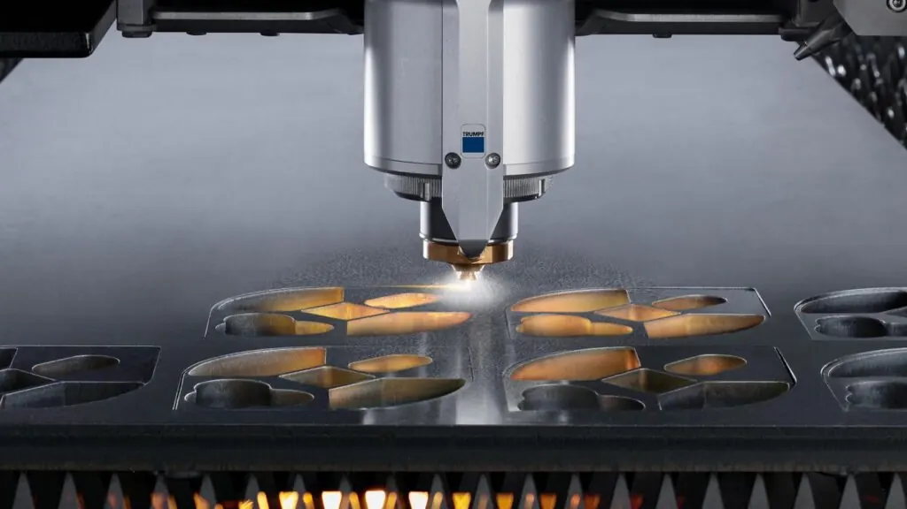
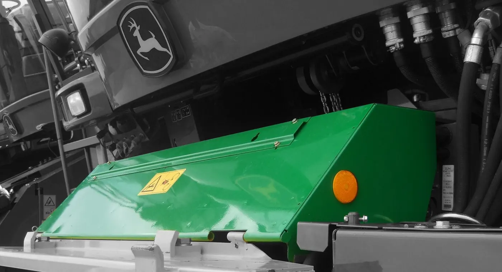
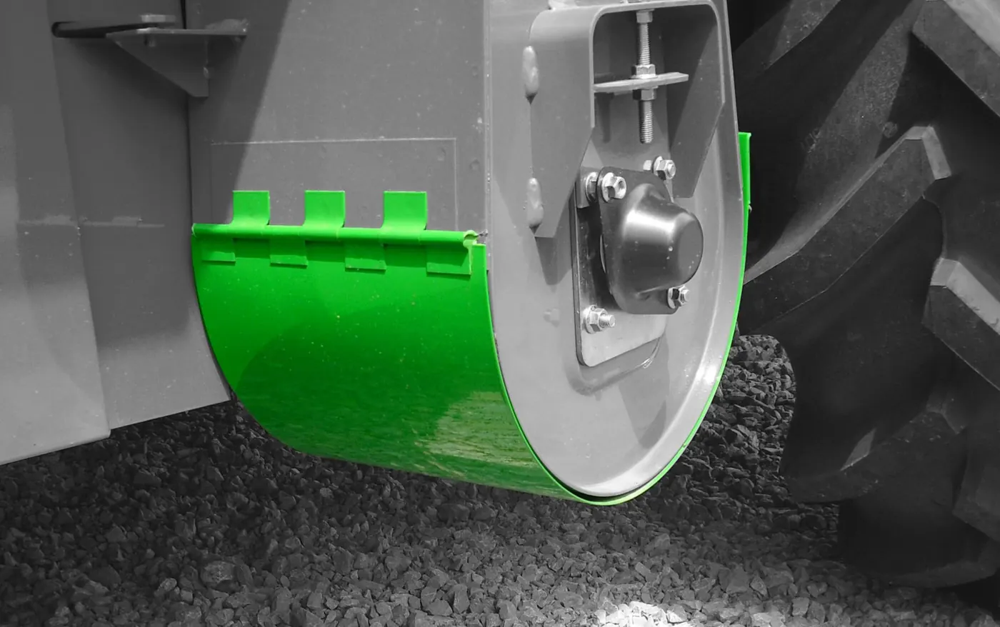
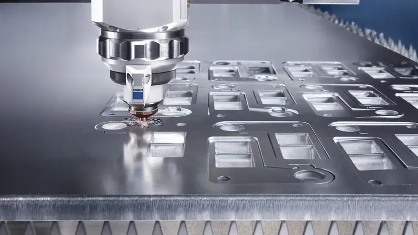

Unser Blech sitzt an Maschinen, die arbeitenLand- und Baumaschinenbau
Wir schneiden und kanten Blechteile für den Land- und Baumaschinensektor: Prototypen, Einzelteile und wiederkehrende Serien.
Wir schneiden und kanten Prototypen, Einzelteile und wiederkehrende Serien — vom Millimeterblech bis 30 Millimeter Stahl.
Aus dem Leitbild der Weber Metallbau GmbH
Teile, die längst im Einsatz sind
Farbig ist jeweils das, was aus unserer Halle kommt. Der Rest ist die Maschine, an der es sitzt. Bei Land- und Baumaschinen ist unser Blech oft das erste, was ein Fahrer anfasst.







Gekennzeichnet, auf der Palette, raus.
Jedes Teil verlässt die Halle so, wie Ihr Lager es braucht. Versand geht in ganz Deutschland, abgeholt wird genauso oft.
Spezialisiert auf Land- und Baumaschinen
Dort sitzen unsere Teile dort, wo es rau wird: an Aufstiegen, Verkleidungen, Konsolen und Auslegern. Das prägt, wie wir arbeiten — Blechdicken, die tragen, Kanten, die halten, und Maße, die auch beim zwanzigsten Teil noch stimmen.
- LandmaschinenbauVerkleidungen, Aufstiege, Halterungen und Anbauteile
- BaumaschinenbauKonsolenbleche, Schutzbleche und Abdeckungen am Ausleger
- Maschinen- und AnlagenbauRahmen, Gehäuseteile und Zuschnitte nach Zeichnung
- PrototypenbauEin Teil zum Probieren, bevor die Serie freigegeben wird

- ISO 9001:2015Zertifiziert durch die GTÜ — Prüfungen begleiten die Fertigung, sie kommen nicht erst am Ende.
- ErstteilprüfungDas erste Teil wird gemessen, bevor die Serie durchläuft.
- Abgelegte ProgrammeNachbestellungen laufen ohne neue Einrichtzeit.
- FertigungstiefeVom Rohblech bis zum geprüften Teil im eigenen Haus.
Welches Teil sitzt als Nächstes an Ihrer Maschine?
Schicken Sie uns die Zeichnung. Wir sagen Ihnen, ob wir es fertigen können und zu welcher Stückzahl es passt.
Oder direkt anrufen: 08772 803707